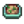

Cooking
- For an index to the completed cooking collection, see Collections#Cooking.
Cooking is a game mechanic that becomes available after upgrading the farmhouse for the first time. The house upgrade adds a kitchen, which includes a stove and a refrigerator. The stove is the cooking interface, while the refrigerator provides 36 slots of storage space, similar to a chest. The refrigerator is unique in that it is directly linked with the cooking interface, as if it were an extension of the player's inventory. Only ingredients in the player's inventory, refrigerator or Mini-Fridge are seen as usable items for a recipe.
Alternatively, after reaching Foraging level 3 the player can use a Cookout Kit to cook anywhere.
The player must learn each recipe before it is unlocked for cooking, with the exception of Fried Egg, which is known by the player upon starting a new save file. Locked recipes are displayed as a black silhouette of the recipe icon, with a tooltip description that says "???". Unlocked recipe icons will appear greyed-out if any of the ingredients are missing, but the tooltip will provide information regarding the recipe. Any missing ingredients will be highlighted in red. If all the ingredients required for a recipe are present either in the player's inventory or the refrigerator (or a combination of the two) the recipe icon will become fully highlighted.
Buffs
Only one food’s buffs can be active at a time, so eating a food with buffs will wipe out any active food buffs and replace them with the buffs from the newly eaten food. If a newly eaten food has no buffs, any existing buffs will remain in effect. Drink buffs are handled separately, so buffs from one drink (Triple Shot Espresso, Coffee, Green Tea or Ginger Ale) can be stacked with one food’s buffs.
Buff duration varies for each food and drink (see table below)[1], but is the same for all buff effects of a given food or drink, except Squid Ink Ravioli. Using Qi Seasoning increases the duration by 50%.
Achievements
There are three Achievements associated with Cooking:
- Cook (Cook 10 different recipes)
- Sous Chef (Cook 25 different recipes)
- Gourmet Chef (Cook every recipe)
Qi Seasoning
Qi Seasoning, which can be purchased from Qi's Walnut Room for 10 for a stack of ten, makes cooked food Gold quality, increasing its health and energy values by 80% and its sell price by 50%. It will also increase the buffs given (excluding Speed buffs) by one level. For example, Seafoam Pudding would give +5 fishing rather than +4 if cooked with Qi Seasoning. It will be used automatically if it is in inventory, the refrigerator, or a Mini-Fridge when cooking. Running out of Qi Seasoning will result in a message saying: "You've used up all of your Qi Seasoning."
Recipes
| Image | Name | Description | Ingredients | Energy / Health | Buff(s) | Buff Duration | Recipe Source(s) | Sell Price | |||
|---|---|---|---|---|---|---|---|---|---|---|---|
| Fried Egg | Sunny-side up. | N/A | N/A | Starter | |||||||
| Omelet | It's super fluffy. | N/A | N/A |
|
|||||||
| Salad | A healthy garden salad. | N/A | N/A |
|
|||||||
| Cheese Cauliflower | It smells great! | N/A | N/A |
|
|||||||
| Baked Fish | Baked fish on a bed of herbs. | N/A | N/A |
|
|||||||
| Parsnip Soup | It's fresh and hearty. | N/A | N/A |
|
|||||||
| Vegetable Medley | This is very nutritious. | N/A | N/A |
|
|||||||
| Complete Breakfast | You'll feel ready to take on the world! |
|
|||||||||
| Fried Calamari | It's so chewy. | N/A | N/A |
|
|||||||
| Strange Bun | What's inside? | N/A | N/A |
|
|||||||
| Lucky Lunch | A special little meal. |
|
|||||||||
| Fried Mushroom | Earthy and aromatic. |
|
|||||||||
| Pizza | It's popular for all the right reasons. | N/A | N/A |
|
|||||||
| Bean Hotpot | It sure is healthy. |
|
|||||||||
| Glazed Yams | Sweet and satisfying... The sugar gives it a hint of caramel. | N/A | N/A |
|
|||||||
| Carp Surprise | It's bland and oily. | N/A | N/A |
|
|||||||
| Hashbrowns | Crispy and golden-brown! |
Stardrop Saloon for |
|||||||||
| Pancakes | A double stack of fluffy, soft pancakes. |
|
|||||||||
| Salmon Dinner | The lemon spritz makes it special. | N/A | N/A |
|
|||||||
| Fish Taco | It smells delicious. |
|
|||||||||
| Crispy Bass | Wow, the breading is perfect. |
|
|||||||||
| Pepper Poppers | Spicy breaded peppers filled with cheese. |
|
|||||||||
| Bread | A crusty baguette. | N/A | N/A |
|
|||||||
| Tom Kha Soup | These flavors are incredible! |
|
|||||||||
| Trout Soup | Pretty salty. |
|
|||||||||
| Chocolate Cake | Rich and moist with a thick fudge icing. | N/A | N/A |
|
|||||||
| Pink Cake | There's little heart candies on top. | N/A | N/A |
|
|||||||
| Rhubarb Pie | Mmm, tangy and sweet! | N/A | N/A |
|
|||||||
| Cookie | Very chewy. | N/A | N/A |
|
|||||||
| Spaghetti | An old favorite. | N/A | N/A |
|
|||||||
| Fried Eel | Greasy but flavorful. |
|
|||||||||
| Spicy Eel | It's really spicy! Be careful. |
|
|||||||||
| Sashimi | Raw fish sliced into thin pieces. | N/A | N/A |
|
|||||||
| Maki Roll | Fish and rice wrapped in seaweed. | N/A | N/A |
|
|||||||
| Tortilla | Can be used as a vessel for food or eaten by itself. | N/A | N/A |
|
|||||||
| Red Plate | Full of antioxidants. |
|
|||||||||
| Eggplant Parmesan | Tangy, cheesy, and wonderful. |
|
|||||||||
| Rice Pudding | It's creamy, sweet, and fun to eat. | N/A | N/A |
|
|||||||
| Ice Cream | It's hard to find someone who doesn't like this. | N/A | N/A |
|
|||||||
| Blueberry Tart | It's subtle and refreshing. | N/A | N/A |
|
|||||||
| Autumn's Bounty | A taste of the season. |
|
|||||||||
| Pumpkin Soup | A seasonal favorite. |
|
|||||||||
| Super Meal | It's a really energizing meal. |
|
|||||||||
| Cranberry Sauce | A festive treat. |
|
|||||||||
| Stuffing | Ahh... the smell of warm bread and sage. |
|
|||||||||
| Farmer's Lunch | This'll keep you going. | ||||||||||
| Survival Burger | A convenient snack for the explorer. | ||||||||||
| Dish O' The Sea | This'll keep you warm in the cold sea air. | ||||||||||
| Miner's Treat | This should keep your energy up. | ||||||||||
| Roots Platter | This'll get you digging for more. | ||||||||||
| Triple Shot Espresso | It's more potent than regular coffee! | ||||||||||
| Seafoam Pudding | This briny pudding will really get you into the maritime mindset! | ||||||||||
| Algae Soup | It's a little slimy. | N/A | N/A |
|
|||||||
| Pale Broth | A delicate broth with a hint of sulfur. | N/A | N/A |
|
|||||||
| Plum Pudding | A traditional holiday treat. | N/A | N/A |
|
|||||||
| Artichoke Dip | It's cool and refreshing. | N/A | N/A |
|
|||||||
| Stir Fry | Julienned vegetables on a bed of rice. | N/A | N/A |
|
|||||||
| Roasted Hazelnuts | The roasting process creates a rich forest flavor. | N/A | N/A |
|
|||||||
| Pumpkin Pie | Silky pumpkin cream in a flaky crust. | N/A | N/A |
|
|||||||
| Radish Salad | The radishes are so crisp! | N/A | N/A |
|
|||||||
| Fruit Salad | A delicious combination of summer fruits. | N/A | N/A |
|
|||||||
| Blackberry Cobbler | There's nothing quite like it. | N/A | N/A |
|
|||||||
| Cranberry Candy | It's sweet enough to mask the bitter fruit. | N/A | N/A |
|
|||||||
| Bruschetta | Roasted tomatoes on a crisp white bread. | N/A | N/A |
|
|||||||
| Coleslaw | It's light, fresh and very healthy. | N/A | N/A |
|
|||||||
| Fiddlehead Risotto | A creamy rice dish served with sauteed fern heads. It's a little bland. | N/A | N/A |
|
|||||||
| Poppyseed Muffin | It has a soothing effect. | N/A | N/A |
|
|||||||
| Chowder | A perfect way to warm yourself after a cold night at sea. |
|
|||||||||
| Fish Stew | It smells a lot like the sea. Tastes better, though. |
|
|||||||||
| Escargot | Butter-soaked snails cooked to perfection. |
|
|||||||||
| Lobster Bisque | This delicate soup is a secret family recipe of Willy's. |
|
|||||||||
| Maple Bar | It's a sweet doughnut topped with a rich maple glaze. |
|
|||||||||
| Crab Cakes | Crab, bread crumbs, and egg formed into patties then fried to a golden brown. |
|
|||||||||
| Shrimp Cocktail | A sumptuous appetizer made with freshly-caught shrimp. |
|
|||||||||
| Ginger Ale | A zesty soda known for its soothing effect on the stomach. | Dwarf Shop in Volcano Dungeon for |
|||||||||
| Banana Pudding | A creamy dessert with a wonderful tropical flavor. |
|
|||||||||
| Mango Sticky Rice | Sweet mango and coconut transforms this rice into something very special. |
|
|||||||||
| Poi | A traditional food with a delicate, sweet flavor when eaten fresh. | N/A | N/A |
|
|||||||
| Tropical Curry | An exotic, fragrant curry served in a pineapple bowl. | Ginger Island Resort for |
|||||||||
| Squid Ink Ravioli | Temporarily protects from debuffs. | Ravioli Buff) |
|||||||||
| Moss Soup | It's thick and slimy, but edible. | N/A | N/A |
Ingredients
A minimum of 88 different types of items are needed to cook all 80 dishes in the game, including:
- 26 crop products
- 13 foraged goods
- 4 tree fruits
- 2 animal products
- 4 artisan goods
- 3 miscellaneous items (maple syrup, squid ink, moss)
- 17 items obtained from fishing
- 8 crab pot items
- 5 items bought from Pierre's General Store
- 6 dishes used as ingredients
These tables assume crafted dishes will be used to make other crafted dishes. For example, 1 Potato would be used to make Hashbrowns, then those Hashbrowns would be used to make Complete Breakfast. 1 more Potato would be needed to make Hashbrowns for Dish O' The Sea. When finished, the Gourmet Chef achievement would be earned for cooking every dish, but there would be no Hashbrowns because they were used to make the other dishes.
Crops
| Image | Name | Amount needed | Season | Growth Time | Notes | Required for |
|---|---|---|---|---|---|---|
| Parsnip | 2 | Spring | 4 Days | |||
| Kale | 2 | Spring | 6 Days | Harvest with Scythe | ||
| Potato | 2 | Spring | 6 Days | Has a 20% chance to yield extra potatoes | ||
| Blue Jazz | 1 | Spring | 7 Days | |||
| Green Bean | 2 | Spring | 10 Days | Grows on Trellis. Continues to produce every 3 days. | ||
| Cauliflower | 1 | Spring | 12 Days | Can become a Giant Crop | ||
| Rhubarb | 1 | Spring | 13 Days | Seeds available in the Oasis | ||
| Garlic | 2 | Spring | 4 Days | Available from Year 2 |  Fiddlehead Risotto (1) | |
| Hot Pepper | 3 | Summer | 5 Days | Continues to produce every 3 days. | ||
| Radish | 2 | Summer | 6 Days | |||
| Poppy | 1 | Summer | 7 Days | |||
| Tomato | 8 | Summer | 11 Days | Continues to produce every 4 days. | ||
| Melon | 2 | Summer | 12 Days | Can become a Giant Crop | ||
| Blueberry | 2 | Summer | 13 Days | Produces multiple blueberries each harvest. Continues to produce every 4 days. | ||
| Corn | 2 | Summer/Fall | 14 Days | Continues to produce every 4 days. | ||
| Red Cabbage | 3 | Summer | 9 Days | Available from Year 2 | ||
| Bok Choy | 1 | Fall | 4 Days | |||
| Eggplant | 2 | Fall | 5 Days | Continues to produce every 5 days. | ||
| Amaranth | 1 | Fall | 7 Days | Harvested with Scythe | ||
| Cranberries | 4 | Fall | 7 Days | Produces 2 Cranberries at harvest. Continues to produce every 5 days. | ||
| Yam | 2 | Fall | 10 Days | |||
| Pumpkin | 3 | Fall | 13 Days | Can become a Giant Crop | ||
| Beet | 1 | Fall | 6 Days | Seeds available at the Oasis | ||
| Artichoke | 2 | Fall | 8 Days | Available from Year 2 | ||
| Pineapple | 1 | Summer | 14 Days | |||
| Taro Root | 4 | Summer | 10 Days |
Foraged Goods
Tree Fruit
| Image | Name | Amount needed | Source | Season | Required for |
|---|---|---|---|---|---|
| Apple | 1 | Apple Tree | Fall | Cranberry Candy (1) | |
| Apricot | 1 | Apricot Tree | Spring | ||
| Banana | 1 | Banana Tree | Summer | ||
| Mango | 1 | Mango Tree | Summer |
Animal Products
Note: All recipes requiring milk will accept either Milk or Large Milk. Both Goat Milk and Large Goat Milk can also be used in any recipe needing milk.
For egg recipes, all chicken and duck eggs are allowed, including void eggs.
| Image | Name | Amount needed | Source | Notes | Required for |
|---|---|---|---|---|---|
| Egg | 8 | Chickens |
|||
| Milk | 12 |  Cows |
Obtain with Milk Pail |
Artisan Goods
Note that Coffee can instead be purchased from The Stardrop Saloon for  300g each instead of creating it.
300g each instead of creating it.
| Image | Name | Amount needed | Source | Input Item | Producing Time | Required for |
|---|---|---|---|---|---|---|
| Cheese | 3 | Cheese Press | 3.3 hours | |||
| Mayonnaise | 2 | Mayonnaise Machine | 3 hours | |||
| Void Mayonnaise | 1 | Mayonnaise Machine | 3 hours | |||
| Coffee | 3 | Keg | 2 hours |
Miscellaneous
| Image | Name | Amount needed | Source | Producing Time | Required for |
|---|---|---|---|---|---|
| Maple Syrup | 1 | Tapped Maple Tree | 7-8 days | ||
| Squid Ink | 2 | Squid Kid or Blue Squid drop, Fish Pond containing Squid or Midnight Squid | Varies depending on Fish Pond population | ||
| Moss | 20 | Moss-covered trees | N/A |
Fishing
Note that Seaweed can be foraged from the Tide Pools during any season. Green Algae and White Algae may also be dropped by various monsters in Secret Woods and The Mines.
Crab Pot Items
Note that Clams and Mussels can be foraged from The Beach during any season. Crabs may also be dropped by Rock Crabs or Lava Crabs in The Mines.
| Image | Name | Amount needed | Location | Required for |
|---|---|---|---|---|
| Lobster | 1 | Ocean | ||
| Clam | 1 | Ocean | ||
| Crayfish | 1 | Freshwater | ||
| Crab | 1 | Ocean | ||
| Mussel | 1 | Ocean | ||
| Shrimp | 2 | Ocean | ||
| Snail | 1 | Freshwater | ||
| Periwinkle | 2 | Freshwater |
General Store Items
Purchased from Pierre at Pierre's General Store.
Ingredient Dishes
The ingredients for these are already included in the previous lists. These are used as ingredients in other dishes.
| Image | Name | Amount needed | Ingredients | Required for |
|---|---|---|---|---|
| Fried Egg | 1 | |||
| Hashbrowns | 2 | |||
| Pancakes | 1 | |||
| Tortilla | 2 | |||
| Bread | 3 | |||
| Omelet | 1 |
Profitable Recipes
- See Also: When to turn fish into sashimi
While most recipes will sell for less than the cost or profit from their ingredients, there are a few that will always result in profit when using the lowest quality ingredients.
Note: It may be more profitable to save Fish for "Help Wanted" quests, which generally pay triple the fish's base value, than to turn them into Sashimi.
The following recipes will result in profit when using the lowest-quality ingredients:
However, for maximum profit, it is always better to process ingredients in a Preserves Jar, Keg, Mayonnaise Machine, or Cheese Press.
The only noteworthy exceptions (since cooking is the only way to process algae, cave carrots, winter root, and fish) are Algae Soup (+ 40g), Pale Broth (+
40g), Pale Broth (+ 100g), Roots Platter with regular quality winter root (+
100g), Roots Platter with regular quality winter root (+ 5g), and Sashimi with low-tier fish. Aside from these four recipes, cooking for profit only becomes attractive if the ingredient production greatly exceeds the processing capacity.
5g), and Sashimi with low-tier fish. Aside from these four recipes, cooking for profit only becomes attractive if the ingredient production greatly exceeds the processing capacity.
Quests
 100,000g worth of freshly cooked items are requested in the Qi's Cuisine quest. During this quest, cooking will create dishes with the word "Fresh" at the beginning of their names (i.e., Fresh Fried Egg, Fresh Omelet, etc.), which cannot stack with food items cooked before the start of the quest.
100,000g worth of freshly cooked items are requested in the Qi's Cuisine quest. During this quest, cooking will create dishes with the word "Fresh" at the beginning of their names (i.e., Fresh Fried Egg, Fresh Omelet, etc.), which cannot stack with food items cooked before the start of the quest.
Notes
- Every recipe searches for ingredients in the following locations, always in the same order from the bottom right slot to the top left slot:
- first in the player's inventory
- then in the main refrigerator
- finally in any Mini-Fridges
- When auto-sorted with the Organize button, this bottom-right-first order will automatically consume lower quality items of the same type. However, for recipes with substitutes, place ingredients accordingly as desired towards the bottom right, in order to avoid using more valuable ingredients in less valuable recipes, or in recipes that accept a wide variety of ingredients. As an example, Tuna (which is required for Fish Taco) is accepted in Sashimi which accepts any type of fish. However, by placing a Mussel in the bottom right slot, the Mussel will be picked first and save the Tuna for the more exclusive and valuable recipe.
- When searching multiple Mini-Fridges, the game picks from the last placed one in the exact chronological order in which the fridges were first placed, and then works backwards. The location of the fridge in the farmhouse does not matter.
Bugs
- Mobile only: Eating a food that gives a buff and then pressing the ‘Swap to previous save’ button will carry the buffs to the previous save. This can be used to eat difficult to craft/find food without losing it.
- The game has a limited display area for active buffs at the top right of the screen (about the width of 3½ buff icons). For any buff icons active outside of that range, the source and timer will not be displayed when hovered over.
References
- ↑ Buff duration for each food and drink appears in Content\Data\ObjectInformation.xnb at the 8th index. The given number must be then multiplied by 700 to have the duration in milliseconds. The formula in set in Buff::Buff in the game code.
History
- Sometime between v1.11 and v1.3, a bug was removed that caused the duration of buffs to decrease as the day progressed.
- 1.3.27: Artichoke Dip, Pumpkin Pie, Chowder, and Lobster Bisque now accept Large Milk in place of regular milk.
- 1.4: Added Shrimp Cocktail, Seafoam Pudding, Triple Shot Espresso. Fixed bugged Bean Hotpot buff. Standardized cooking tab with stove interface across all languages. Added Mini-Fridge as a storage option for ingredients.
- 1.5: Added Banana Pudding, Ginger Ale, Mango Sticky Rice, Poi, Tropical Curry, Squid Ink Ravioli. Goat Milk and Large Goat Milk can now be used in recipes.
- 1.6: Added Moss Soup.